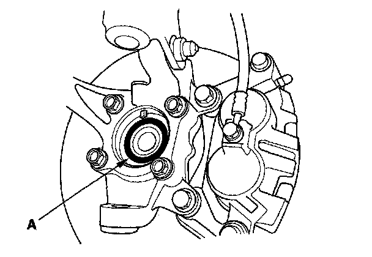
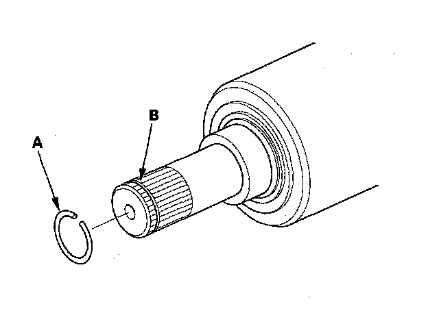
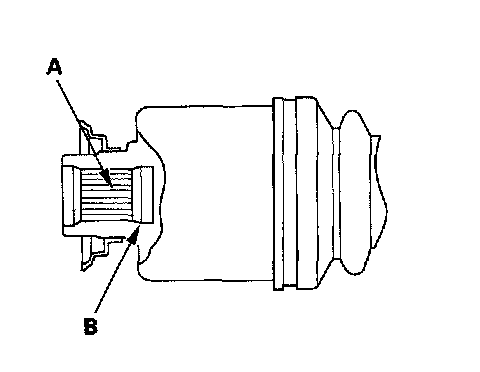
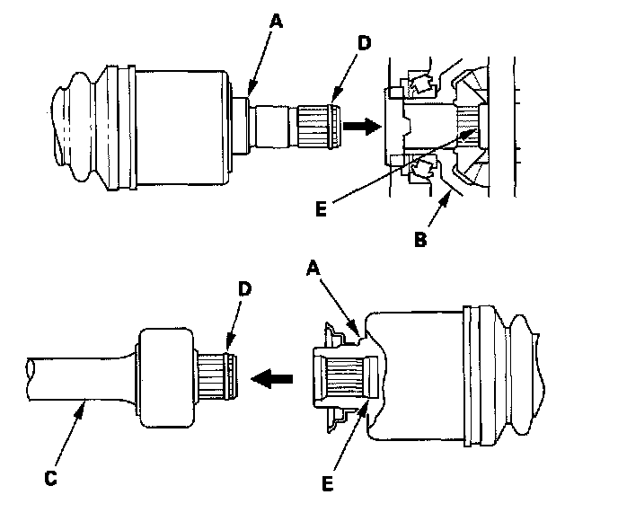
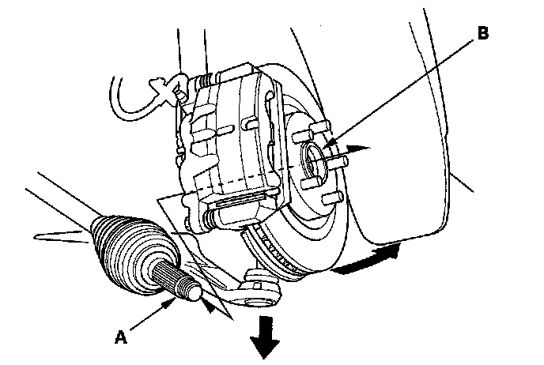
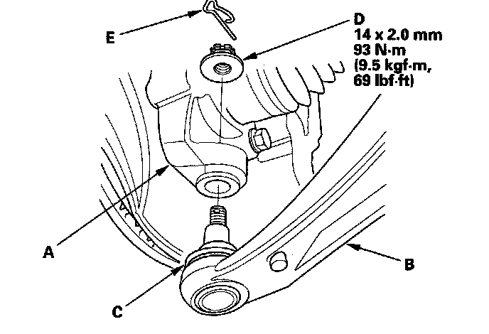
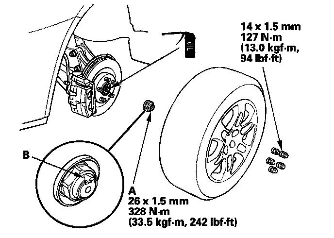

Front Driveshaft Installation
Front Driveshaft Installation1. Apply grease to the contact area (A) of the outboard joint and front wheel bearing.
NOTE: Failing to apply grease may cause excessive noise and vibration.

2. Install a new set ring (A) in the set ring groove (B) of the driveshaft (left driveshaft).

3. Apply 2.0-3.0 g (0.07-0.10 oz) of grease to the entire splined surface (A) of the right driveshaft. After applying grease, remove the grease from the splined grooves at intervals of 2-3 splines and from the set ring groove (B) so that air can bleed from the intermediate shaft.

4. Clean the areas where the driveshaft contacts the differential thoroughly with brake cleaner, and dry with compressed air. Do not wash the rubber parts with solvent. Insert the inboard end (A) of the driveshaft into the differential (B) or intermediate shaft (C) until the set ring (D) locks in the groove (E).

5. Install the splash shield.
6. Install the outboard joint (A) into the front hub (B).

7. Install the knuckle (A) onto the lower arm (B). Be careful not to damage the ball joint boot (C). Wipe off the grease before tightening the nut at the ball joint. Torque the new castle nut (D) to the lower torque specification, then tighten it only far enough to align the slot with the ball joint pin hole. Do not align the nut by loosening it.
NOTE: Make sure the ball joint boot is not damaged or cracked.

8. Install the new lock pin (E) into the pin hole as shown.
9. Install the suspension stroke sensor (with active damper system).
10. Install a new spindle nut (A) then tighten the nut. After tightening, use a drift to stake the spindle nut shoulder (B) against the driveshaft.

11. Clean the mating surfaces of the brake disc and the front wheel, then install the front wheel with the wheel nuts.
12. Turn the front wheel by hand, and make sure there is no interference between the driveshaft and surrounding parts.
13. Tighten the flange bolts and the self-locking nut with the vehicle's weight on the damper.
14. Refill the transmission with recommended fluid.
15. Check the front wheel alignment, and adjust it if necessary.